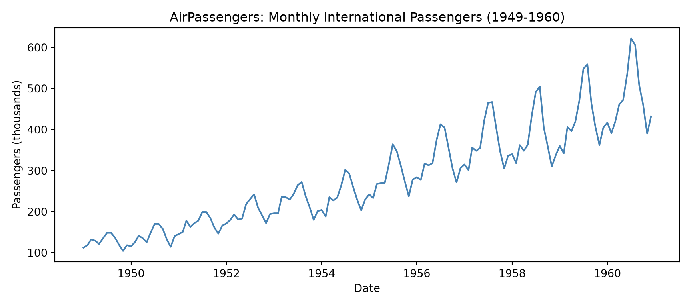
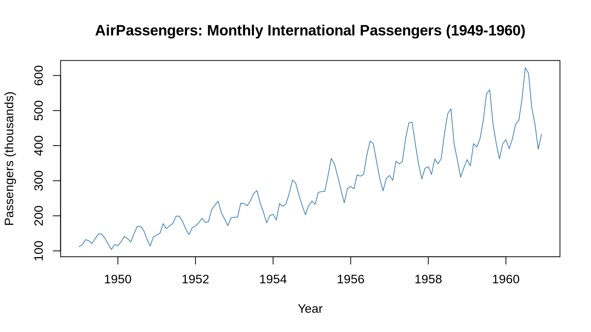
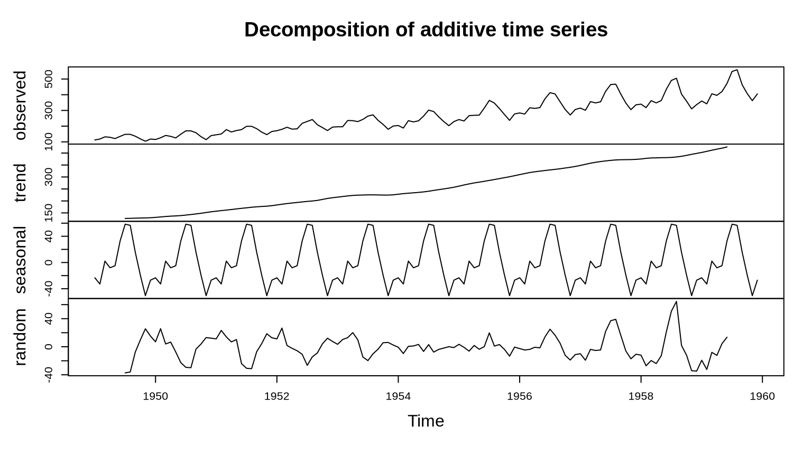
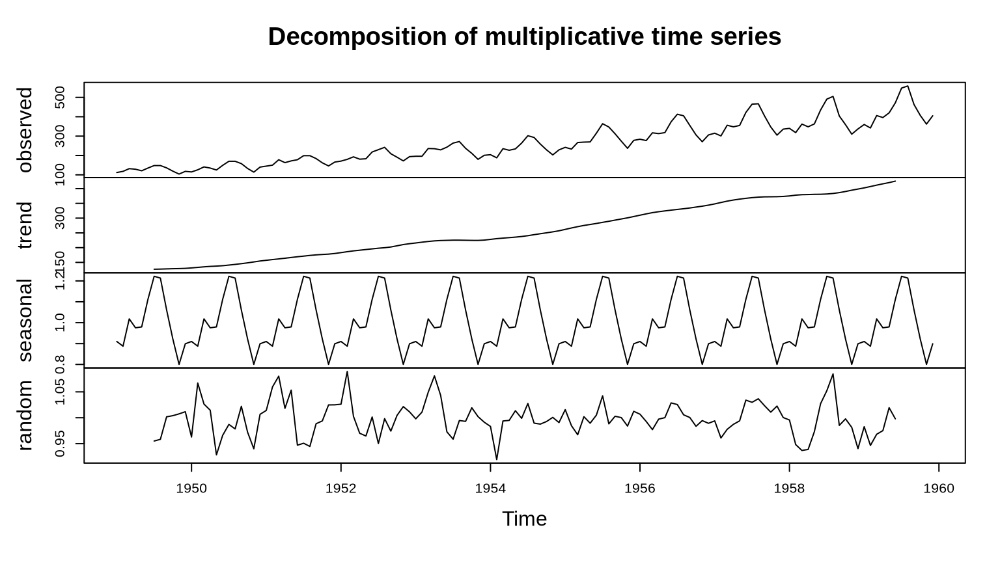
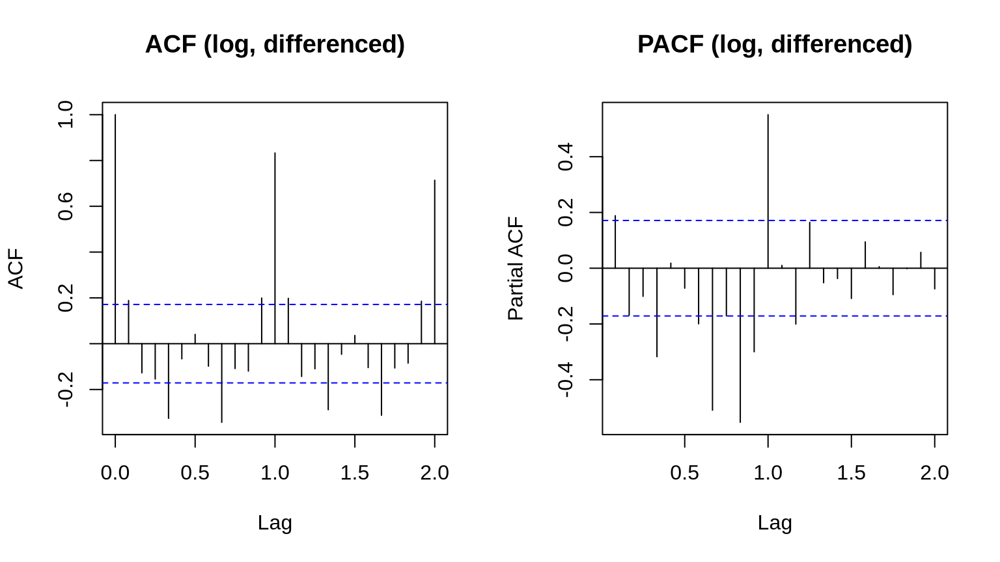

Working Through AirPassengers, Step by Step, in Both Languages
Author
G. I. Hansamal
About This Walkthrough
We’re going to work through a complete time series analysis twice — once in Python, once in R — using the same dataset and the same modeling decisions both times. Each step below has a tabbed panel, so you can click between “Python” and “R” and see how the same idea is written in each language.
Let’s use the AirPassengers dataset for this: monthly totals of international airline passengers from 1949 to 1960. It’s a familiar one in time series courses, but that’s actually the point here — it has a clean upward trend, a yearly seasonal pattern, and the seasonal swings get bigger as the numbers get bigger. We’ll lean on that last property a few times as we go, to motivate why we make certain modeling choices instead of just asserting them.
Note
Before you render this
R: needs the tseries package (for adf.test() / kpss.test()) and reticulate (to run the Python chunks). Everything else on the R side — decompose(), arima(), acf()/pacf() — ships with base R.
Python: needs numpy, pandas, matplotlib, scipy, and statsmodels available to whatever Python reticulate points at.
We pull the dataset into Python using statsmodels’ get_rdataset(), which downloads it from the same public Rdatasets archive R’s built-in copy traces back to. So the first render needs internet access; after that it’s cached locally (cache=True), so we don’t re-download it every time.
Step 1: Load the Data and Set Up a Train/Test Split
Let’s start by loading the data. R already has AirPassengers built in. On the Python side, statsmodels can fetch the exact same dataset by name through get_rdataset() — so we’re not approximating it with something similar, it’s the same 144 monthly values either way.
We’ll also hold out the last 12 months (all of 1960) right away, before we do anything else. Everything we build later — the decomposition forecast and the ARIMA forecast — gets checked against those 12 real, held-back values instead of just being eyeballed on a chart.
# install.packages("tseries") # run once if you don't already have itlibrary(tseries)data("AirPassengers")h <-12train <-window(AirPassengers, end =c(1959, 12))test <-window(AirPassengers, start =c(1960, 1))head(AirPassengers)
Jan Feb Mar Apr May Jun
1949 112 118 132 129 121 135
Both tabs should print the same first six values (112, 118, 132, 129, 121, 135 thousand passengers) and the same 132/12 train/test split. If those don’t match, we’ve got a data-loading problem to fix before going any further.
Step 2: Plot the Time Series
Let’s just look at the data before we do anything to it.
plt.figure(figsize=(9, 4))plt.plot(ts_data.index, ts_data.values, color="steelblue")plt.title("AirPassengers: Monthly International Passengers (1949-1960)")plt.xlabel("Date")plt.ylabel("Passengers (thousands)")plt.tight_layout()plt.show()

plot(AirPassengers,main ="AirPassengers: Monthly International Passengers (1949-1960)",xlab ="Year", ylab ="Passengers (thousands)", col ="steelblue")

Already we can see most of what we need: a steady upward trend, a repeating yearly pattern (summer peaks, winter dips), and — look closely — the size of those yearly peaks and dips grows as we move right. Early on, the swing within a year is maybe 20-30 thousand passengers; by the end it’s closer to 100. We’ll come back to that widening pattern in the next step, since it’s the visual clue for choosing a multiplicative rather than purely additive seasonal model.
Step 3: Classical Decomposition — Trend, Seasonal Index, and Residual
Now let’s break the series down into its parts. Classical decomposition splits it into trend, seasonal, and residual pieces, combined one of two ways:
We’ll fit both on the training data and compare them — and instead of just plotting the pieces, let’s also pull out the actual numbers: the trend line’s values and the twelve seasonal indices (one per calendar month).
# The seasonal component repeats every 12 months -- the first 12 values# ARE the seasonal index, one per calendar monthmonth_names = ["Jan", "Feb", "Mar", "Apr", "May", "Jun","Jul", "Aug", "Sep", "Oct", "Nov", "Dec"]add_seasonal_index = add_decomp.seasonal.iloc[:12]add_seasonal_index.index = month_namesprint("\nAdditive seasonal index (thousands of passengers, +/- around trend):")
Additive seasonal index (thousands of passengers, +/- around trend):
print(add_seasonal_index.round(2))
Jan -23.31
Feb -32.79
Mar 2.14
Apr -8.02
May -4.90
Jun 32.93
Jul 58.47
Aug 56.70
Sep 15.63
Oct -19.33
Nov -50.59
Dec -26.94
Name: seasonal, dtype: float64
mul_seasonal_index = mul_decomp.seasonal.iloc[:12]mul_seasonal_index.index = month_namesprint("\nMultiplicative seasonal index (ratio relative to trend):")
Multiplicative seasonal index (ratio relative to trend):
print(mul_seasonal_index.round(3))
Jan 0.910
Feb 0.887
Mar 1.018
Apr 0.975
May 0.980
Jun 1.112
Jul 1.222
Aug 1.214
Sep 1.061
Oct 0.922
Nov 0.800
Dec 0.899
Name: seasonal, dtype: float64
print(f"\nAdditive residual std dev: {np.nanstd(add_decomp.resid):.2f} (thousands of passengers)")
Additive residual std dev: 17.28 (thousands of passengers)
print(f"Multiplicative residual std dev: {np.nanstd(mul_decomp.resid):.4f} (ratio, centered on 1.0)")
Multiplicative residual std dev: 0.0324 (ratio, centered on 1.0)
decomp_add <-decompose(train, type ="additive")plot(decomp_add)

decomp_mul <-decompose(train, type ="multiplicative")plot(decomp_mul)

# Pull the trend line out as numbers, not just a picturecat("Trend component, first 3 estimated months:\n")
# decompose() already stores the one-cycle seasonal index in $figureadd_seasonal_index <-setNames(decomp_add$figure, month.abb)cat("\nAdditive seasonal index (thousands of passengers, +/- around trend):\n")
Additive seasonal index (thousands of passengers, +/- around trend):
print(round(add_seasonal_index, 2))
Jan Feb Mar Apr May Jun Jul Aug Sep Oct Nov
-23.31 -32.79 2.14 -8.02 -4.90 32.93 58.47 56.70 15.63 -19.33 -50.59
Dec
-26.94
mul_seasonal_index <-setNames(decomp_mul$figure, month.abb)cat("\nMultiplicative seasonal index (ratio relative to trend):\n")
Multiplicative seasonal index (ratio relative to trend):
print(round(mul_seasonal_index, 3))
Jan Feb Mar Apr May Jun Jul Aug Sep Oct Nov Dec
0.910 0.887 1.018 0.975 0.980 1.112 1.222 1.214 1.061 0.922 0.800 0.899
cat("\nAdditive residual std dev: ", round(sd(na.omit(decomp_add$random)), 2),"(thousands of passengers)\n")
Additive residual std dev: 17.35 (thousands of passengers)
cat("Multiplicative residual std dev: ", round(sd(na.omit(decomp_mul$random)), 4),"(ratio, centered on 1.0)\n")
Multiplicative residual std dev: 0.0326 (ratio, centered on 1.0)
A few things worth reading off that output rather than just the plots: the additive seasonal index tells us, in thousands of passengers, how far above or below trend each calendar month typically runs — July and August are the strongest (around +55 to +60), February and November the weakest (around -30 to -50). The multiplicative seasonal index tells the same story as a ratio: July runs about 22% above trend, November about 20% below.
Now compare the residual spread between the two. In the additive version, the leftover noise visibly fans out — small in the early years, noticeably bigger toward the end — meaning the additive model isn’t fully capturing the seasonal pattern. In the multiplicative version, the residual (a ratio centered on 1.0) stays small and fairly even across the whole period. That matches what we noticed back in Step 2 — this dataset behaves multiplicatively, and the printed standard deviations confirm it.
Step 4: Statistical Tests for Stationarity
Before we fit any AR/MA-style model, let’s check whether the series is (close to) stationary — roughly constant mean and variance over time. Three checks:
Augmented Dickey-Fuller (ADF): null hypothesis is “non-stationary.” A small p-value lets us reject that, i.e. it argues for stationarity.
KPSS: the opposite null — “stationary.” A small p-value here argues against stationarity. Running both is a useful cross-check, since they can occasionally disagree.
Ljung-Box: tests whether there’s significant leftover autocorrelation at a given lag — useful here, and again later on model residuals.
adf_raw = adfuller(train)print(f"ADF on raw series -> statistic={adf_raw[0]:.3f}, p-value={adf_raw[1]:.3f}")
ADF on raw series -> statistic=0.888, p-value=0.993
kpss_raw = kpss(train, regression="c")print(f"KPSS on raw series -> statistic={kpss_raw[0]:.3f}, p-value={kpss_raw[1]:.3f}")
KPSS on raw series -> statistic=1.886, p-value=0.010
lb_raw = acorr_ljungbox(train, lags=[12], return_df=True)print("\nLjung-Box test (lag 12) on raw series:")
Ljung-Box test (lag 12) on raw series:
print(lb_raw)
lb_stat lb_pvalue
12 916.316804 1.798815e-188
# Stabilize the variance with a log transform, then remove the trend with one differencelog_train = np.log(train)log_diff = log_train.diff().dropna()adf_diff = adfuller(log_diff)print(f"\nADF on log + differenced series -> statistic={adf_diff[0]:.3f}, p-value={adf_diff[1]:.3f}")
ADF on log + differenced series -> statistic=-3.065, p-value=0.029
adf_raw <-adf.test(train)print(adf_raw)
Augmented Dickey-Fuller Test
data: train
Dickey-Fuller = -7.1692, Lag order = 5, p-value = 0.01
alternative hypothesis: stationary
kpss_raw <-kpss.test(train)print(kpss_raw)
KPSS Test for Level Stationarity
data: train
KPSS Level = 2.5186, Truncation lag parameter = 4, p-value = 0.01
lb_raw <-Box.test(train, lag =12, type ="Ljung-Box")print(lb_raw)
# Stabilize the variance with a log transform, then remove the trend with one differencelog_train <-log(train)log_diff <-diff(log_train)adf_diff <-adf.test(log_diff)print(adf_diff)
Augmented Dickey-Fuller Test
data: log_diff
Dickey-Fuller = -6.0845, Lag order = 5, p-value = 0.01
alternative hypothesis: stationary
On the raw training series, we’d expect the ADF p-value to come back large (can’t reject “non-stationary”) and the KPSS p-value to come back small (rejects “stationary”) — both pointing the same direction, matching the obvious trend in the plot. The Ljung-Box test should also come back with a tiny p-value, confirming there’s a lot of structure (trend + seasonality) still left to account for.
The log transform we just applied addresses the growing seasonal swings from Step 3 — working in log space turns a multiplicative pattern into an additive one, which is exactly the kind of pattern ARIMA-family models assume. Taking one difference on top of that removes the trend. After both steps, the ADF p-value on log_diff should drop well below 0.05 — that series is stationary enough to model directly. This is exactly what ARIMA(p, 1, q) is doing internally once we hand it the logged series with d = 1 in Step 7.
Step 5: Forecast With Classical Decomposition
Let’s see how far a simple, easy-to-explain forecast gets us, before we bring in ARIMA at all:
Fit a straight line through the trend component (from the training decomposition only) and extend it 12 months forward.
Repeat the last full seasonal cycle for those same 12 months.
Add the two together.
Check the result against the actual held-out 1960 values, using three error measures: RMSE, MAE, and MAPE (mean absolute percentage error).
The RMSE and MAE are in the same units as the data (thousands of monthly passengers), so they’re directly readable — an MAE around 45-50 means the forecast was off by roughly 45-50 thousand passengers per month on average over 1960. MAPE gives us the same idea as a percentage, which is handy for comparing across datasets later. Worth noticing on the chart too: because this forecast used the additive decomposition’s trend and seasonal figure, it tends to undershoot the biggest summer peaks a little — the same weakness we flagged for additive decomposition back in Step 3. Let’s keep that number in mind; we’ll compare it directly to ARIMA’s error in Step 9.
Step 6: ACF and PACF — Choosing Model Orders
Now let’s switch over to ARMA-family models. We already stationarized the series in Step 4 (log_diff = one difference of the logged training data), so we can go straight to the ACF and PACF on that. These plots are normally how you’d pick starting values for p and q: bars that stick out past the shaded/dashed confidence band are the lags worth paying attention to.
par(mfrow =c(1, 2))acf(log_diff, lag.max =24, main ="ACF (log, differenced)")pacf(log_diff, lag.max =24, main ="PACF (log, differenced)")

par(mfrow =c(1, 1))
The early lags (1-3) usually show up as significant in both plots, which is typical of an ARMA-type process — that’s why an order like (2, ., 2) is a reasonable starting point in the next step. We’ll also likely spot a spike around lag 12 (maybe 24) — that’s the seasonal cycle poking through. A single ordinary difference removes the trend but not seasonality; that’s a real limitation of plain ARIMA on a series like this one, and it’s worth remembering once we get to the forecast comparison in Step 9.
Step 7: Fit AR, MA, ARMA, and ARIMA Models
Let’s fit all four model types — they’re really all special cases of ARIMA(p, d, q) — on the logged training data, for the variance- stabilizing reason discussed in Step 4:
Model
(p, d, q)
AR(2)
(2, 0, 0)
MA(2)
(0, 0, 2)
ARMA(2,2)
(2, 0, 2)
ARIMA(2,1,2)
(2, 1, 2)
We’ll compare them two ways: AIC (lower is better — rewards a closer fit but penalizes unnecessary extra parameters) and in-sample RMSE on the log scale (how far the model’s own fitted values were from the training data it was fit on).
ARIMA(2,1,2) should come out clearly ahead of the other three on both AIC and in-sample RMSE, and that’s not a coincidence — AR(2) and MA(2) on their own have no mechanism for handling a strong, sustained trend like this one; only the d = 1 differencing term lets the model follow a moving level. That’s the practical reason ARIMA tends to beat plain AR or MA models on trending data, beyond just “it has more parameters.” (One small note: Python and R estimate these models slightly differently under the hood — conditional sum-of-squares vs. a state-space/Kalman filter approach by default — so don’t expect the two tables to match to the decimal. They should agree on which model wins, though.)
Step 8: Forecast With ARIMA
Let’s take ARIMA(2,1,2) — fit on the log scale — and forecast the same 12 held-out months. We’ll exponentiate the forecast (and its confidence interval) back to the original passenger-count scale before comparing it to test, using the same three error measures as Step 5.
Don’t be surprised if ARIMA(2,1,2) doesn’t clearly beat the much simpler decomposition forecast here — and if anything, it can come out worse. That’s not a bug; it’s the seasonal gap we flagged back in Step 6. Plain ARIMA(p, d, q) has no seasonal term, so on a series with a strong, regular 12-month cycle like this one, it’s working at a real disadvantage compared to a method (like our decomposition forecast) that explicitly repeats the seasonal pattern. The natural next step — adding a seasonal term to get a full SARIMA model — would very likely close that gap, but it’s outside the AR/MA/ARMA/ARIMA scope of this walkthrough. Worth having ready if someone in the room asks “why didn’t ARIMA win?”
Wrap-Up
We worked through the same nine steps twice — load, plot, decompose, test for stationarity, forecast with decomposition, check ACF/PACF, fit AR/MA/ARMA/ ARIMA, forecast with ARIMA, and compare. A few things that stood out as we went:
R’s ts object carries its frequency and start date with it everywhere; in pandas we manage a DatetimeIndex ourselves, which is one extra step but also more flexible for irregular data.
R’s decompose() and arima() are base functions — nothing to install beyond tseries for the stationarity tests. Python relies on statsmodels for essentially all of it.
decompose() hands us the seasonal index directly as $figure; in statsmodels we get there by slicing the first 12 values out of the repeating seasonal series — same number, different route.
predict() on an R arima fit returns log-scale predictions and standard errors we exponentiate by hand; statsmodels’ get_forecast().conf_int() gives a ready-made interval, still on whatever scale we fit on.
Plotting is base R graphics (plot(), acf(), ts.plot()) versus matplotlib — different calls, but once we know the data lines up, it’s a fairly direct line-by-line translation between the two.